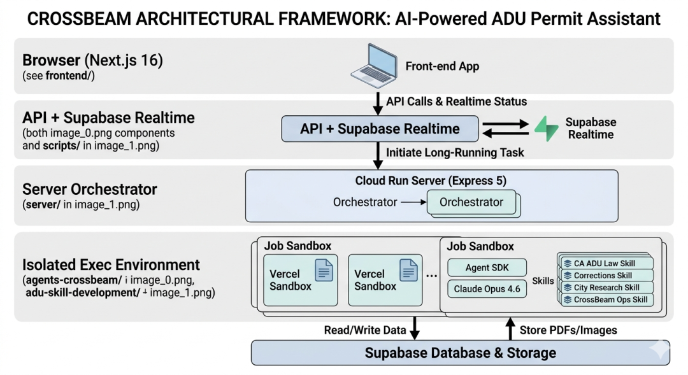

1、解决什么问题：住房危机背后的官僚泥潭
在加州，建设附属居住单元（ADU，类似后院小屋）是缓解住房危机的关键。然而，大约 90% 的申请会因为复杂的建筑规范被政府退回，并附带一份晦涩难懂的“纠正信”（Correction Letter）。
传统做法： 业主需花费数千美金聘请建筑师，耗时数周比对数千页的加州建筑代码（California Building Standards Code）来修改蓝图。
2、如何解决：13 个核心 Skills
具体的实现有兴趣可以去git上看下：https://github.com/mikeOnBreeze/cc-crossbeam
简单来说是利用Claude Code构建了一个多 Agent 系统，这 13 个技能（类似插件或子模块）协同工作，用banana总结了张图（详细的skill描述放文末了有兴趣的自取）。
值得关注的是，Michael几乎没有手写过一行 React 或 Python 代码。他全程使用 Claude Code (CLI)快速迭代产品，第一天只能解析文字；第三天能看懂图纸；第五天能把法律条文对号入座。由于 Claude 4.6 的长上下文压缩技术，他在调试时无需反复输入长文档，节省了大量 API 成本和时间。
3、为什么获胜：商业&社会价值突出
4. 局限性与未来
Michael 在黑客松演示中诚实地指出：目前 CrossBeam 只能处理 ADU（后院小屋） 级别的复杂程度。如果是超大型摩天大楼，图纸的复杂度和法规的重叠度可能会让当前的 AI 产生幻觉。他的下一步计划是引入 RAG（检索增强生成） 的混合模式，进一步提高准确率。
在 AI浪潮的下半场，“技术门槛”正在让位于“问题定义能力”。CrossBeam 的获奖，实质上是领域经验对纯工程能力的一次“降维打击”。
1. 物理世界的“微观线索”，是模型的盲区
大模型（LLM）虽然吞噬了整个人类的知识库，但它本质上是“数字世界的原住民”。
这种微观环境的非结构化线索，只有像 Michael 这样在行业一线、被真实痛点反复“毒打”过的人，才能精准捕捉。AI 能提供算力，但只有人能提供“问题”。
2. 从“模型崇拜”转向“经验编排”
以往我们崇拜模型本身的参数规模，但 CrossBeam 证明了：更有效的路径是“编排”而非“叠加”。他理解：
1）建筑审批的物理真实情况：图纸不只是线条，它是空间、是逃生路径、是成本预算。
2）社会博弈真实情况：审核员、房主、法律条文之间存在着隐形的博弈链路。
这种编排能力，来源于对物理世界复杂运行规律的深度思考。未来的赢家，不是最懂 AI 的人，而是最懂“真实世界如何运行”的人。
附录1：13个skills
1）3个感知与对齐技能
- PDF 坐标解析仪 (Coordinate Locator)：（最难点） 它是系统的“眼睛”。不仅识别文字，还能看懂蓝图上的网格线（如 A-1 轴线），将政府信中提到的“卧室 2”精准锁定在图纸的物理坐标上。
- 视觉差异检测器 (Visual Diff)：对比多版图纸，自动识别哪些地方被改动过，确保 AI 不会漏掉任何微小的线条修改。
- 笔迹识别器 (Handwriting OCR)：专门对付政府审核员在蓝图上随手勾画的、草书般的红色批注。
2）6个知识与推理技能
- 法规引用机 (Statute Engine)：（核心大脑） 实时检索 28 本加州法典。当信件提到“R310.2”时，它不仅秒回原文，还能吐出相关的解释性备忘录（Memos）。
- 术语翻译器 (Legalese to Human)：将“Egress requirements”翻译成“逃生窗高度”，把冷冰冰的法律变成业主的“装修攻略”。
- 成本预测器：根据修改建议自动预估：这扇窗户改大，大概要多花多少钱？
- 历史案例比对：检索过往类似的驳回案例，看看别的房主是怎么“死里逃生”通过审核的。
- 结构冲突检查：确保改动窗户不会撞上承重墙。
- 分区法规检查 (Zoning Checker)：确保护坡、后院间距等外部限制也同时达标。
3）4个审计与输出技能
- 自我纠错循环 (The Self-Correction Loop)：（获胜关键） 这是一个“职业杠精”智能体。它专门负责审核 AI 自己的建议：“你为了满足采光改大了窗户，是不是又违反了节能法规 Title 24？” 这种互搏避免了“修好一个洞，又挖了一个坑”。
- 回复信自动撰写 (Response Writer)：用最得体、最专业的法律辞令，帮业主写好给政府的回信。
- 格式校验员：确保导出的所有 PDF 符合加州政府极为苛刻的排版要求。
- 逻辑链路审计 (Chain-of-Thought Auditor)：最后一道关卡，检查前 12 个技能的推理过程是否有逻辑跳跃，确保每条建议都有据可查。
